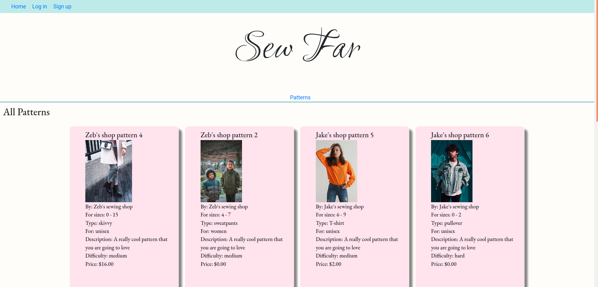
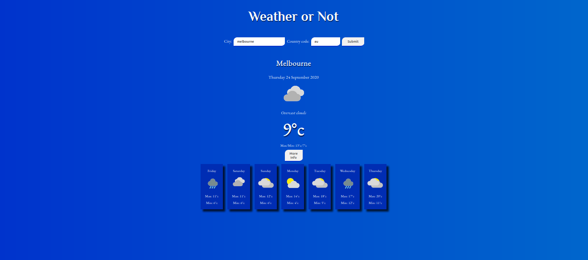

Jason Stacy Photography

I created this website to showcase my photography work. It has a professional style and I’m very
happy
with the layout that I chose.
There is a slideshow on the home screen showing photos in varying different categories from nature to
portrait and art.
The site consists of 4 different pages.
The home page has the slide show of images.
The classes page has information on classes I run out of my home when I get the time and when people
are
interested in taking them.
The about me page has information on my photographic background.
The contact page has all my details.
The site has some PHP to keep the different pages DRY by including the header and footer elements.
It also has some JavaScript to display the slideshow and the drop-down menus.
Born Secret

I am a drummer in a band called Born Secret and I thought it would be a good project to create a
website
for them.
We are a three piece all original band but don’t manage to play very often due to everyone having
young
families. We do try to get together once every few months and keep the songs fresh.
The website is basically just the one page. I included some functionality to play songs that we self
recorded as well as some video that was recorded live at a gig we did in 2018.
I made the website from scratch but there is some basic bare bones WordPress functionality there to
enable the band mates to update posts when necessary. Although they never have…
There is a photo slideshow down the bottom in JavaScript. And the website is fully responsive with a
JavaScript hamburger menu and adjusting columns.
Who is Mr Jones

I am also a drummer in a band called Who is Mr Jones?
This is a three piece consisting of my wife Chantel, Merry (a close friend) and myself. We are a
folk/rock band and much like Born Secret do not play very often. In fact it seems these days we are
permanently on hiatus.
The site is again just a one page site that I created from scratch but with bare bones WordPress
functionality built in to update using posts easily.
There is a complete collection of the recorded songs on the site with links to purchase the music
from
various different online vendors.
I have included a slideshow of photos at the bottom with JavaScript too.
Sew Far

Knitting has [Ravelry](https://www.ravelry.com/). A place to go where anyone can upload and sell a knitting pattern, but sewers have been left to buy their patterns from major companies.
There are sites like [Etsy](https://www.etsy.com/) that allow people to post their designs but nothing that's dedicated to sewing. This has left a gap in the market for a more community based sharing solution for sewers. Sew Far fills this gap.
This is one way people can reach out and find people with similar interests.
Sewers don't currently have a dedicated site where they can go and share their designs, show off their sewing skills and be a part of the sewing community.
Weather or Not

A Hackathon project for Coder Academy
A combined programming exercise by Jason Stacy and Vipul Seth
We used a git forking workflow to collaborate on making this website called Weather or Not. It uses HTML, Javascript and CSS.
We searched through the available API's on the public API's website. I suggested a weather app because I was having issues with my android phone weather app not displaying the weather info at all and I would have to go to a web page to view the weather.
We had a look at a bunch of weather API's and settled on weatherbit because it looked like it had good documentation. It required an API key but we thought this would be good practice to try using a key with axios.
The site takes two parameters – city name and country code. It then displays the current weather and a forecast for the upcoming week.